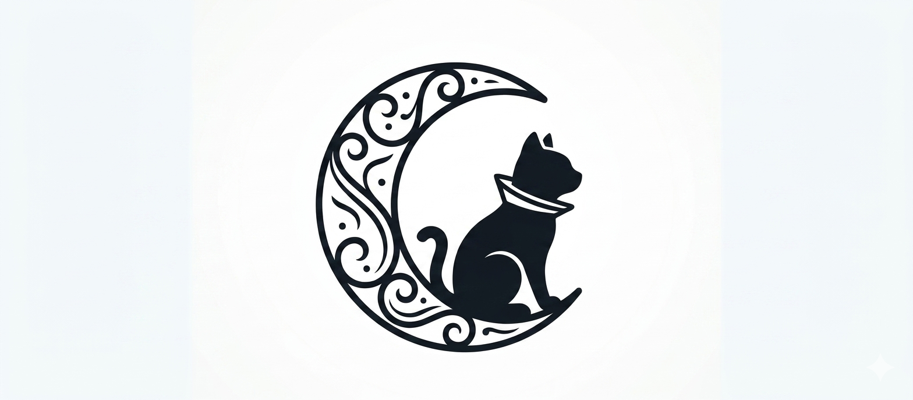
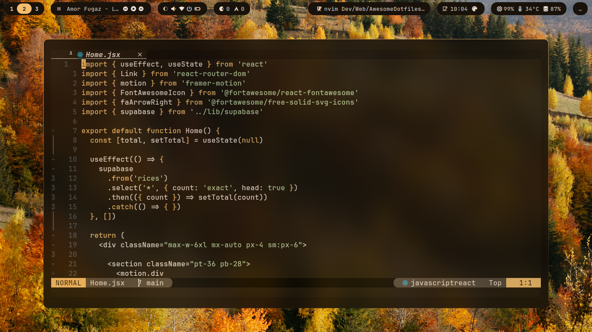
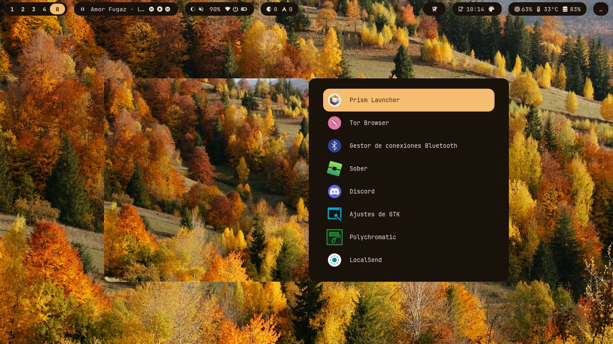
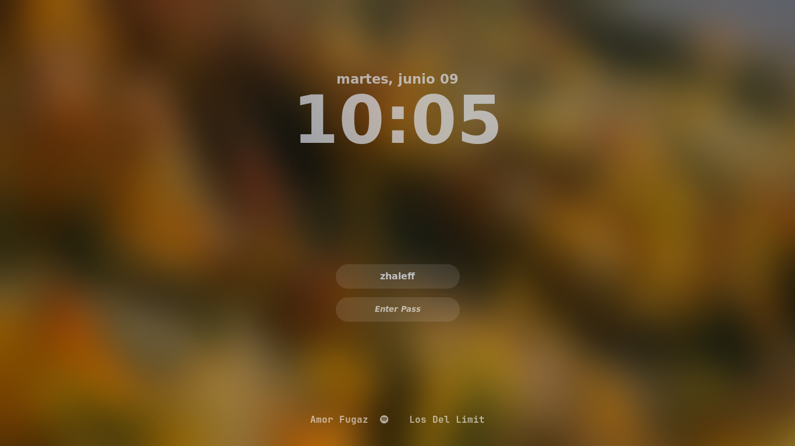
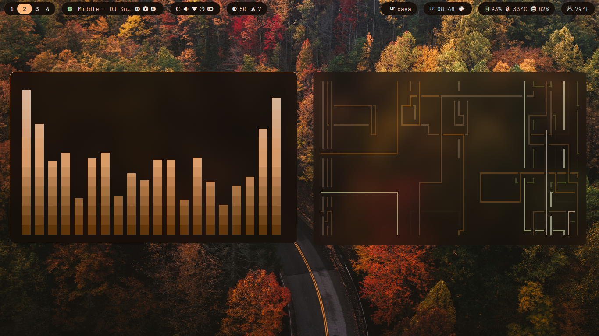
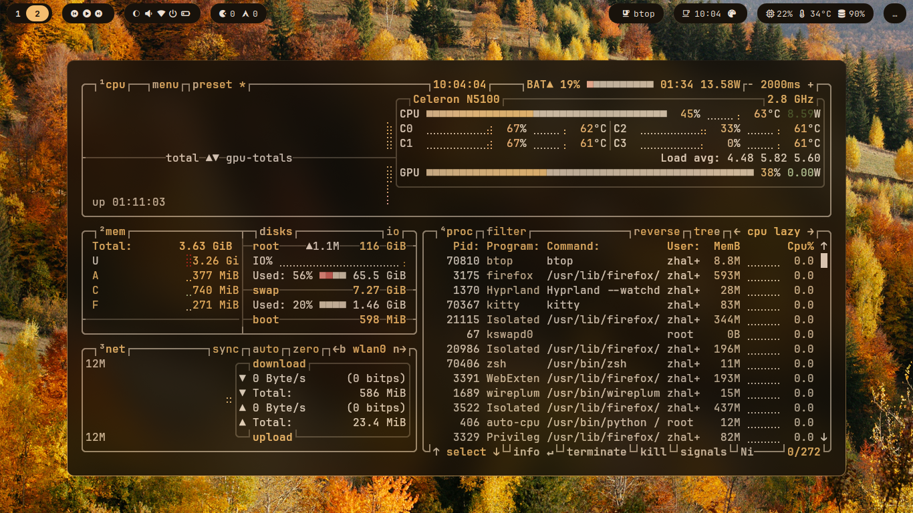
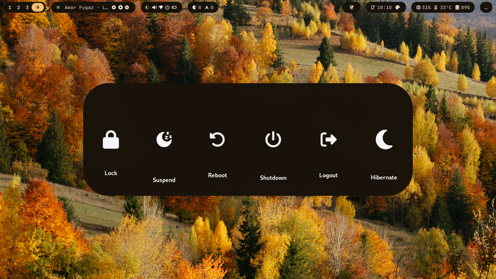

BlackNode is a living Linux configuration. A small software system that embraces you instead of complicating your life — every file written to be read, understood, and eventually changed by you.
Requires Arch Linux · Hyprland · Waybar · Kitty — or just your curiosity.

Nothing here because it's popular. Everything deliberate. Built on a clean layout with clear layers you can read, tweak and break.
A single installer links what you need and builds local components. Nothing runs without your input.
Matugen generates your whole palette from your wallpaper — GTK, Qt, Waybar, rofi and the lockscreen stay in sync.
blacknode-brain learns your habits and adapts the environment — 100% local, no network, no telemetry.
The learning engine is a small, fast Rust binary compiled and linked by the installer — no runtime dependencies.
Keybindings, modules, reference and architecture docs ship in the repo — written for humans.
Configs, source, scripts and docs in a clear layout — the blacknode command is your front door to everything.
| Component | Tool | Role |
|---|---|---|
| Window manager | Hyprland | Dynamic tiling Wayland compositor |
| Status bar | Waybar | Fully configurable bar |
| Terminal | Kitty | GPU-accelerated terminal emulator |
| Shell | Zsh + Powerlevel10k | Fast shell with a powerful prompt |
| Launcher | Rofi | App launcher and dmenu replacement |
| Notifications | Dunst | Lightweight notification daemon |
| Lockscreen | Hyprlock + Hypridle | GPU-accelerated lock with idle management |
| Editor | Neovim | Extensible modal text editor |
| File manager | Yazi | Blazing-fast terminal file manager |
| Theming | Matugen | Material You colors from your wallpaper |
| Logout | Wlogout | Clean session management screen |






Designed for a minimal Arch Linux install. The installer links your dotfiles and builds the local components. Nothing runs without your input.
git clone https://github.com/zhaleff/BlackNode.git $HOME/BlackNode
cd $HOME/BlackNode
bash Scripts/install.shBlackNode is not the answer. It is just a starting point. The real answer is inside you.
Now go. Explore. Break things. Fix them. And make this your own.